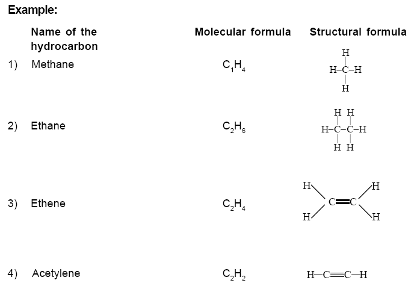
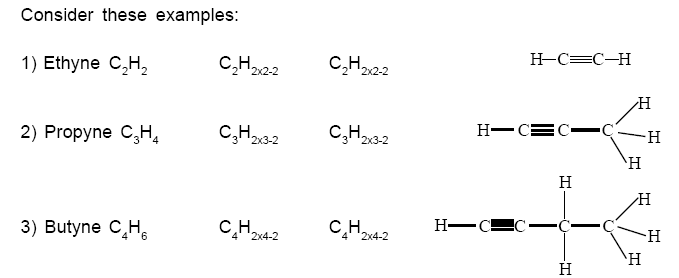
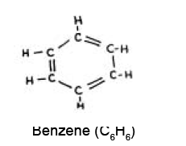
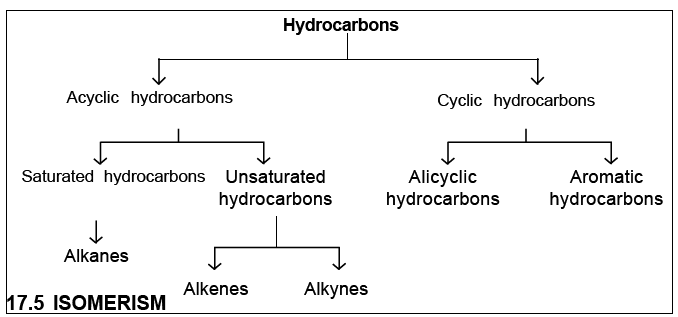
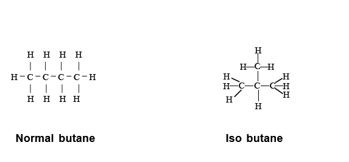

You have studied the role of carbon in the origin and evolution of life on earth. Carbohydrates, proteins, lipids and vitamins are classes of a few organic compounds. These compounds are the essential components of food. The branch of chemistry which studies the compounds of carbon is broadly called organic chemistry. One of the importand group of organic compounds that are useful to us is hydrocarbons. In this chapter we will be studying about hydrocarbons.
Hydrocarbons are the organic compounds consisting of carbon and hydrogen, only. Petroleum fuels are basically hydrocarbons. Hydrocarbons are used as raw materials for the manufacture of plastics, detergents, dyes and many more polymers. Let us study about hydrocarbons in detail. Methane is the simplest hydrocarbon. Molecular formula of methane is CH4. The chemical bonding of CH4 is shown in the figure. The molecular formula does not explain the arrangement of atoms in a molecule. The representation of arrangement of atoms and bonds present in molecule is known as its structural formula. A bond ‘‘____“ indicates a pair of shared electrons between two atoms.
Hydrocarbons are classified into Aliphatic and Aromatic hydrocarbons. Aromatic
compounds will be discussed later.
Aliphatic hydrocarbons are those which are derived out of fat. There are two
types of Aliphatic hydrocarbons - Acyclic hydrocarbons and cyclic hydrocarbons.
Aliphatic hydrocabons are further classified as alkanes, alkenes and alkynes.
These are compounds containing single bonds between carbon atoms. They
are called Alkanes. They are also known as paraffins.
Observe the relationship between the number of carbon atoms and number of
hydrogen atoms in each compound. Number of hydrogen atoms are two more
than twice number of carbon atom in each compound. Therefore this class of
compound is represented by a general formula CnH2n+2, where “n” stands for the
number of carbon atoms.
These hydrocarbons are called alkynes. The hydrocarbon in which a double bond exists between two succesive carbon atoms somewhere in the chain is termed as an Alkene. The general formula of alkenes is CnH2n. In these compounds two hydrongen atoms are less when compared with the corresponding saturated hydrocarbons (alkanes).
These hydrocarbons are called alkynes. Each molecule of alkynes contains a
triple bond between two carbon atoms. In case where triple bond exists, we find
that the number of hydrogen atoms are further decreased. There are two
hydrogen atoms less than that of corresponding alkenes, hence these
hydrocarbons are represented by the general formula CnH2n-2.
Alkenes and Alkynes put together are generalised as unsaturated hydrocarbons.
Now let us consider alicyclic hydrocarbons which are also aliphatic in nature.
Study the following compounds
Aromatic hydrocarbons are a big class of hydrocarbons. Most of the members of this group have characteristic odour. Hence, they are called aromatic compounds. Benzene is the first member of aromatic hydrocarbons. Molecular formula of benzene is C6H6. In benzene six carbon atoms are linked to each other by alternate single and double bonds to form a ring. Its structural formula is as follows:
 In some aliphatic hydrocarbons, a branch may exist in the carbon chain. Such compounds are called branched chain hydrocarbons. Let us consider the example of butane. Molecular formula of butane is C4H10. What could be its structural formula? Butane can be represented by the following structures.
